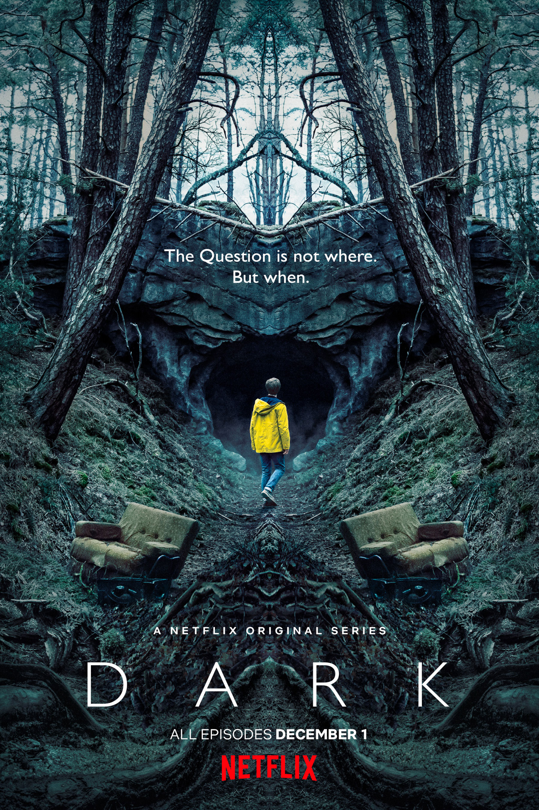

Dark
Source: Dark(n.d.). Retrieved from https://dark-netflix.fandom.com/wiki/Dark
Description: Dark is a German science fiction thriller family drama series created by Baran bo Odar
and Jantje Friese.
Set in the fictional small town of Winden,Germany, it revolves around four
interconnected families haunted by their secrets,
and contains elements of science fiction and fantasy.